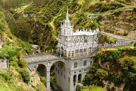

El turismo es una actividad económica importante para Colombia. El encargado de su regulación es el Ministerio de comercio, Industria y Turismo. El gobierno también designó dentro del ordenamiento territorial del país los distritos turísticos de Santa Marta y Cartagena, el archipiélago de San Andrés y Providencia, además los parques nacionales naturales de Colombia y los Territorios Indígenas. La mayoría de los turistas extranjeros que visitan Colombia proviene de países vecinos de Latinoamérica y el Caribe, Norteamérica y Europa.
Biodiversidad
Colombia, es uno de los países mega diversos del mundo, el segundo del mundo solo superado por Brasil, está entre los países que albergan la mayor diversidad biológica, Colombia tiene la variedad más grande de aves y anfibios de todo el mundo (1.815 y 634 especies, respectivamente), y un número notable de plantas, reptiles y mamíferos.
En este país, de tan solo una séptima parte del territorio brasileño, está el 10% de la variedad biológica del planeta. Las latitudes favorables y el clima único del lugar dieron por resultado una riquísima variedad de ecosistemas como llanuras, desiertos, humedales, páramos, laderas andinas y selvas tropicales.
Más de la mitad del territorio colombiano está ocupado por bosques, que albergan a nada menos que 48.000 diferentes especies de plantas, número equivalente al 20% mundial. Además, hay 520 especies conocidas de reptiles y 456 de mamíferos.
Colombia es el único país de América del Sur que tiene costas en el océano Pacífico y en el Mar Caribe, en los que posee diversas islas.
Colombia tiene el número más grande de especies por unidad de área en el planeta.
Bienes Naturales de la Humanidad
- Parque nacional Natural de Los Katíos
- Santuario de flora y fauna de Malpelo
- Paisaje cultural cafetero de Colombia
Parques Nacionales Naturales de Colombia
En el territorio de Colombia 56 Áreas Protegidas Naturales forman parte del Sistema de Parques Nacionales de la Dirección de Parques Nacionales Naturales de Colombia del Minambiente. Lo anterior muestra la riqueza y diversidad de su biología y geografía. Las áreas se encuentran ubicadas a todo lo largo y ancho de su territorio. De esta manera se encuentran: 24 en la Región Andina, (2 en el Nudo de los Pastos, 4 en la Cordillera Occidental, 6 en la Central y 12 en la Oriental); 9 en la Región Caribe; 2 en la Orinoquía; 9 en la Amazonía; 6 en la Costa Pacífica y; finalmente, 3 Islas. Las áreas se encuentran clasificadas en: Parques naturales (38), Santuarios de Fauna y Flora (10), Reservas Nacionales (2), Vía Parque (1) y Área Natural Única Los Estoraques.
A continuación todos los parques naturales de Colombia:
Región Amazonía
El parque nacional natural Sierra de Chiribiquete se encuentra ubicado en los departamentos de Caquetá y Guaviare.
- Parque nacional Natural Yaigojé Apaporis
- Parque nacional Natural Amacayacu
- Parque nacional Natural Serranía de los Churumbelos
- Parque nacional Natural Río Puré
- Reserva Nacional Natural Puinawai
- Reserva Nacional Natural Nukak
- Parque nacional Natural La Paya
- Parque nacional Natural Cahuinarí
- Parque nacional Natural Alto Fragua Indi Wasi
- Santuario de Flora Plantas Medicinales Orito Ingi - Ande
- parque nacional Natural Serranía de Chiribiquete
Región Andes Nororientales
El parque Nacional Natural Cocuy está ubicado al centro-oriente de Colombia, en el límite entre los departamentos de Boyacá y Arauca.
- Santuario de Flora y Fauna Iguaque
- parque nacional Natural el Cocuy
- parque nacional Natural Tamá
- parque nacional Natural Serranía de Los Yariguíes
- parque nacional Natural Pisba
- parque nacional Natural Catatumbo Barí
- Santuario de Flora y Fauna Guanentá Alto Río Fonce
- Área Natural Única Los Estoraques
Región Andes Occidentales
parque nacional Natural Las Orquídeas, Colombia
- Parque nacional Natural Selva de Florencia
- Parque nacional Natural Tatamá
- Parque nacional Natural Nevado del Huila
- Parque nacional Natural Las Orquídeas
- Parque nacional Natural Complejo Volcánico Doña Juana - Cascabel
- Parque nacional Natural Las Hermosas Gloria Valencia de Castaño
- Parque nacional Natural Puracé
- Santuario de Fauna y Flora Otún Quimbaya
- Parque nacional Natural Los Nevados
- Santuario de Flora Isla de la Corota
- Santuario de Flora y Fauna Galeras
- Parque nacional Natural Cueva de los Guácharos
Región Caribe
Parque nacional Natural Tayrona, Colombia
- Macuira National Natural Park
- Parque nacional Natural Bahía Portete - Kaurrele
- Santuario de Fauna Acandí, Playón y Playona
- Parque nacional Natural Corales de Profundidad
- Santuario de Flora y Fauna Los Colorados
- Santuario de Flora y Fauna El Corchal ¨El Mono Hernández¨
- Santuario de Flora y Fauna Ciénaga Grande de Santa Marta
- Parque nacional Natural Paramillo
- Parque nacional Natural Sierra Nevada de Santa Marta
- Parque nacional Natural Old Providence McBean Lagoon
- Parque nacional Natural Macuira
- Santuario de Fauna y Flora Los Flamencos
- Vía Parque Isla de Salamanca
- Parque nacional Natural Corales del Rosario y de San Bernardo
- Parque nacional Natural Tayrona
Región Orinoquía
Parque nacional Natural Chingaza. Colombia
- Distrito Nacional de Manejo Cinaruco
- Parque nacional Natural Cordillera de Los Picachos
- Parque nacional Natural Chingaza
- Parque nacional Natural Sierra de la Macarena
- Parque nacional Natural El Tuparro
- Parque nacional Natural Tinigua
- Parque nacional Natural Sumapaz
Región Pacífico
Parque nacional natural Katíos
- Distrito Nacional de Manejo Cabo Manglares
- Distrito Nacional de Manejo Integrado Yuruparí - Malpelo
- Parque nacional Natural Utría
- Parque nacional Natural Uramba Bahía Málaga
- Parque nacional Natural Sanquianga
- Parque nacional Natural Munchique
- Parque nacional Natural Los Katíos
- Parque nacional Natural Farallones de Cali
- Santuario de Flora y Fauna Malpelo
- Parque nacional Natural Gorgona
Costumbres y tradiciones
Diversos climas y paisajes producen una enorme variedad cultural en Colombia, donde grupos étnicos, bailes, lenguas y eventos populares fuertemente arraigados reafirman la identidad del país. A esta oferta se suman museos y turismo comunitario, al igual que visitas a haciendas, parques y casas coloniales. De esta manera se percibe la verdadera atmósfera de muchos lugares.
Colombia es una nacion plurietnica y diversa. Existen 84 pueblos indígenas, 60 lenguas nativas y población afrodescendiente. Además nos destacamos por nuestras cocinas tradicionales.
Colombia ha recibido 16 declaratorias de Patrimonio de la Humanidad de parte de la UNESCO. Ocho corresponden a lugares y otras ocho, a manifestaciones culturales de Patrimonio Inmaterial.
Es posible percibir la esencia de la idiosincrasia colombiana de muchas maneras. Nuestra manera de ver la vida se refleja en la música autóctona; en museos sobre carnavales y tradiciones religiosas, entre otras cosas
